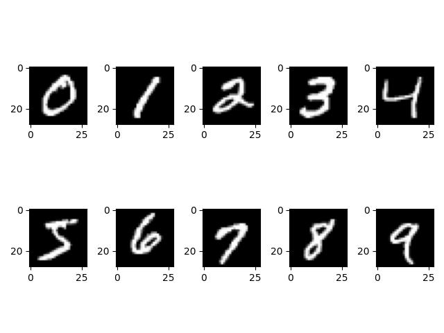
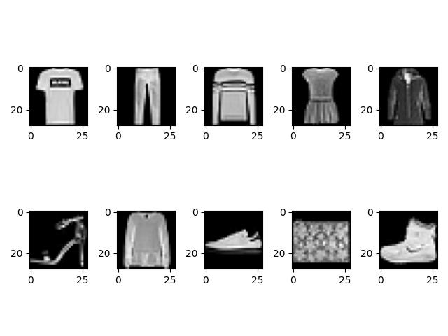

COMPARING KNN, NN AND CNN USING MNIST AND Fashion-MNIST DATASETS
Data
The MNIST dataset is a very well-known image dataset of handwritten digits (link). It has 60,000 training images and 10,000 testing images, each of which is a grayscale 28 x 28 sized image (as shown below). Although it is a good beginner’s dataset to try different machine learning models, many researchers found this dataset is a bit simple for many machine learning algorithms.
The Fashion-MNIST dataset is a collection of images of fashion items, like T-shirts, dresses, shoes etc (as shown below)(link). Since it represents much more complex computer vision task, many researchers use it as a replacement for the original MNIST digits dataset. It shares the same image size (28x28 pixels and grayscale) and has 60,000 training and 10,000 testing images.
Fashion-MNIST dataset has 10 categories of output labels: 0: T-shirt/top, 1: Trouser, 2: Pullover, 3: Dress, 4: Coat, 5: Sandal, 6: Shirt, 7: Sneaker, 8: Bag, 9: Ankle Boot.
Results
MNIST dataset Results
I compared three models: KNN, Neural Network (NN), and Convolutional Neural Network (CNN), by classifying the MNIST dataset. I stated the accuracies on the testing dataset for all the three models as follows:
a. KKN model:
model training for num_neighbors: 1; accuracy: 96.91%
model training for num_neighbors: 3; accuracy: 97.05%
model training for num_neighbors: 5; accuracy: 96.88%
model training for num_neighbors: 7; accuracy: 96.94%
model training for num_neighbors: 9; accuracy: 96.59%
b. Neural Network model:
model training for hidden_layer_sizes: 100; accuracy: 96.85%
model training for hidden_layer_sizes: 300; accuracy: 97.79%
model training for hidden_layer_sizes: 500; accuracy: 96.98%
model training for hidden_layer_sizes: 700; accuracy: 97.85%
model training for hidden_layer_sizes: 900; accuracy: 97.00%
c. CNN model:
CNN with 2 convolutional layers; accuracy: 99.06%
CNN with 4 convolutional layers; accuracy: 99.28%
For MNIST dataset, KNN had accuracy of 96.59% -97.05%, and Neural network model achieved 96.85% - 97.85%. As expected, CNN model achieved the highest accuracy of 99.06% - 99.28% among all three models.
Fashion-MNIST dataset Results
I compared three models: KNN, Neural Network (NN), and Convolutional Neural Network (CNN), by classifying the Fashion-MNIST dataset. I stated the accuracy on the testing dataset for all three models as below:
a. KKN model:
model training for num_neighbors: 1; accuracy: 84.97%
model training for num_neighbors: 3; accuracy: 85.41%
model training for num_neighbors: 5; accuracy: 85.54%
model training for num_neighbors: 7; accuracy: 85.40%
model training for num_neighbors: 9; accuracy: 85.19%
b. Neural Network model:
model training for hidden_layer_sizes: 100; accuracy: 88.68%
model training for hidden_layer_sizes: 300; accuracy: 89.45%
model training for hidden_layer_sizes: 500; accuracy: 89.67%
model training for hidden_layer_sizes: 700; accuracy: 89.34%
model training for hidden_layer_sizes: 900; accuracy: 89.83%
c. CNN model:
During the training of CNN with 4 hidden convolutional layers, I observed that the accuracy of training data was about 98% while the accuracy of validation data was about 91%. It was a clear sign that the model was overfitted. To avoid overfitting during iterations, I added several dropout layers to the model.
CNN with 2 hidden convolutional layers; accuracy: 91.18%
CNN with 4 hidden convolutional layers; accuracy: 91.40%
CNN with 4 hidden convolutional layers and dropout layers; accuracy: 92.14%
After comparing these results of Fashion-MNIST dataset with the results of MNIST dataset, the Fashion-MNIST dataset was indeed a lot more challenging to all the three models tested here. The accuracies on the testing data dropped for all three models. KNN had accuracy of 84.97% -85.54%, and Neural network model achieved 88.68% - 89.83%. Still, CNN model achieved the highest accuracy of 91.18% - 92.14% among all three models.